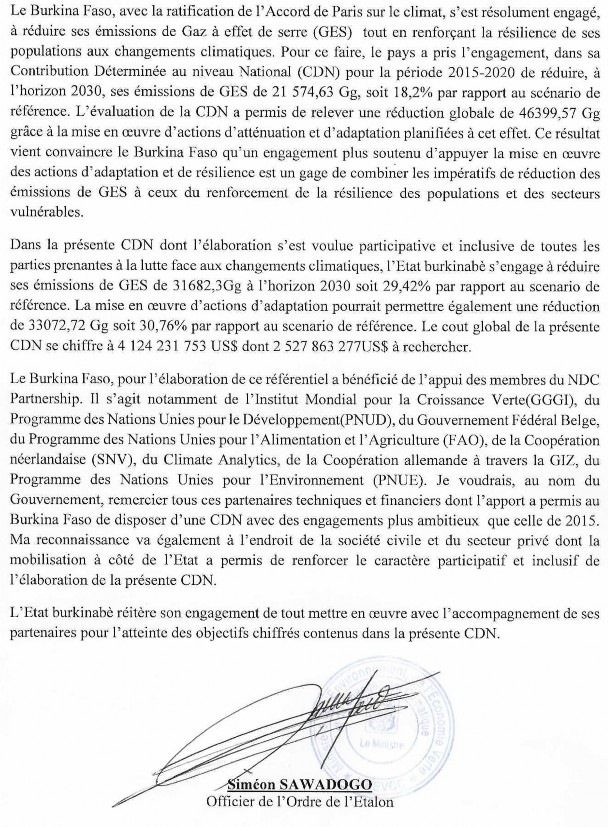
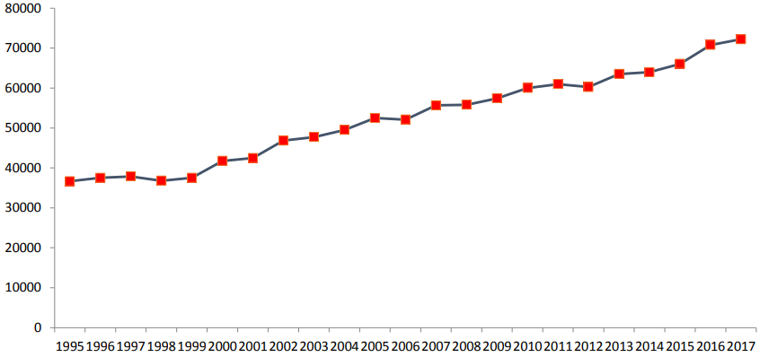
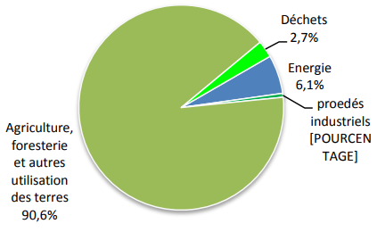
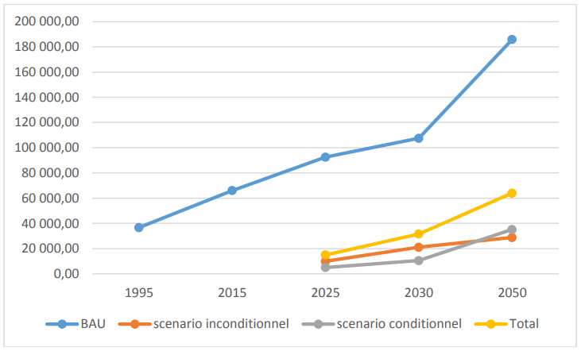
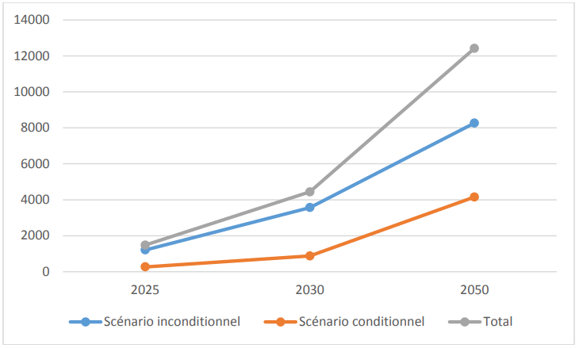
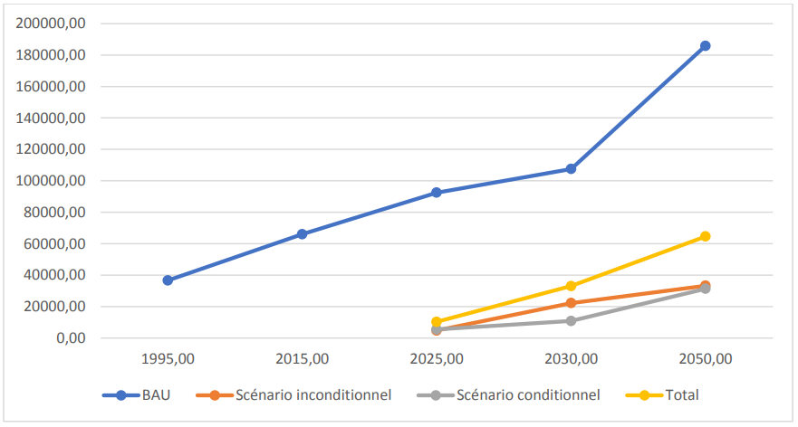

|
AFAT |
: Agriculture, Forestry and Other Land Uses |
|
ANAM |
: National Meteorological Agency |
|
BAU |
: Business As Usual |
|
NTDB |
: National Topographic Database |
|
CAEP |
: Climate Action Enhancement Package |
|
UNFCCC |
: United Nations Framework Convention on Climate Change |
|
CDN |
: Nationally Determined Contribution |
|
CET |
: Technical Landfill Center |
|
DIC |
: Integrated Waste Recovery Center |
|
CN |
: National Communication |
|
CO2eq |
: Carbon Dioxide Equivalent (CO2 Equivalent) |
|
INDC |
: Intended Nationally Determined Contribution |
|
DGESS |
: General Directorates of Studies and Sector Statistics |
|
EX-ACT |
: EX-Ante Carbon-balance Tool |
|
FAARF |
: Support Fund for Women's Income-generating Activities |
|
FAO |
: Food and Agriculture Organization of the United Nations |
|
FIE |
: Intervention Fund for the Environment |
|
GACMO |
: Greenhouse Gas Abatement Cost Model |
|
GHG |
: Greenhouse Gases |
|
Gg |
: Giga Gram |
|
GGGI |
: Global Green Growth Institute |
|
IPCC |
: Intergovernmental Panel on Climate Change |
|
HDI |
: Human Development Index |
|
IGB |
: Geographical Institute of Burkina |
|
IPCC |
: Intergovernmental Panel on Climate Change |
|
MEEVCC |
: Ministry of Environment, Green Economy and Climate Change |
|
MRV |
: Measurement, Reporting, Verification |
|
MW |
: Megawatt |
|
MWp |
: Megawatt-peak |
|
NAMAs |
: Nationally Appropriate Mitigation Actions |
|
ODD |
: Sustainable Development Goals |
|
NGO |
: Non-Governmental Organization |
|
PANA |
: National Action Program for Adaptation to Climate Variability and Change |
|
GDP |
: Gross Domestic Product |
|
PIUP |
: Industrial Processes and Product Use |
|
PMA |
: Least Developed Countries |
|
NAP |
: National Climate Change Adaptation Plan |
|
UNDP |
: United Nations Development Program |
|
UNEP |
: United Nations Environment Program |
|
RCM |
: Regional Climate Model |
|
RGPH |
: General Population and Housing Census |
|
SP/CNDD |
: Permanent Secretariat of the National Council for Sustainable Development |
|
SP/CONEDD |
: Permanent Secretariat of the National Council for the Environment and Sustainable Development |

Burkina Faso, very vulnerable to the effects of climate change, has chosen to contribute to the global effort to stabilize greenhouse gas (GHG) concentrations in the atmosphere. This commitment has materialized through the ratification of the United Nations Framework Convention on Climate Change, the Kyoto Protocol to the said Convention and the Paris Climate Agreement. The country translated its commitment to reduce GHG emissions by submitting its Intended Nationally Determined Contribution (INDC) on October 23, 2015, which subsequently became its Nationally Determined Contribution (NDC) at the end of its ratification of the Paris Climate Agreement. This first NDC set targets for reducing GHG emissions by 2030 of 21,574.63 Gg CO2eq, i.e. 18.2% compared to the reference scenario (Business As Usual) for mitigation actions and of 43,707 Gg CO2eq, or 36.95% through the implementation of adaptation actions. For the period 2015–2020, Burkina Faso forecast a reduction of 5133 Gg CO2eq representing 5.58% in the unconditional scenario and 10953 Gg CO2eq or 11.9% in the conditional scenario for mitigation actions.
The evaluation of the NDC in 2020 shows a reduction of 4,858.07 Gg CO2eq, or 5.3% of the unconditional scenario and 2,643.5 Gg CO2eq, or 2.9% of the conditional scenario. The level of achievement of the commitment for the 2015-2020 period is 91.37% for the unconditional scenario and 24.36% for the conditional scenario. With regard to adaptation actions, the country's commitment in terms of GHG reduction, which amounted to 43,707 Gg CO2eq in 2030, was able to reach a level of achievement of 89% in 2020, i.e. a reduction of 38,898 Gg CO2eq of GHG. Burkina Faso, thanks to the implementation of adaptation actions, has been able to fulfill its commitments to reduce its GHG emissions by 2025. This situation further convinces the country that the financing of its adaptation actions is source of greenhouse gas emission reductions. The low level of achievement of the conditional scenario is explained by the difficulties encountered in mobilizing resources.
The Paris climate agreement provides in its article 4 for an upward revision of the Parties' reduction ambitions every five years. To meet this requirement, the country began the process of revising its NDC at the end of 2019. This revision led by the Permanent Secretariat of the National Council for Sustainable Development (SP/CNDD) was made possible thanks to the support of the NDC Partnership and its partners which are the United Nations Development Program (UNDP), the Global Green Growth Institute (GGGI), the Netherlands Development Organization (SNV), the German Cooperation (GIZ), Climate Analytics, the Food and Agriculture Organization of the United Nations (FAO) and the United Nations Environment Program (UNEP) . Burkina Faso has also adopted a participatory and inclusive approach for the revision of its NDC through the involvement of public and private actors, NGOs and associations, at central, decentralized and decentralized levels.
After the evaluation of its first NDC which allowed it to identify strengths and weaknesses, the country carried out several activities with a view to making its new NDC more ambitious, realistic, measurable, reportable and verifiable. These include (i) the assessment of the GHG sequestration potential of NDC sectors; (ii) estimation of the costs and benefits of the various adaptation and mitigation actions envisaged in the new NDC; (iii) the definition of targets and indicators of the actions selected for the NDC; (iv) alignment of adaptation and mitigation measures with the country's priority SDGs; (v) the consideration of gender and nature-based solutions in the NDC; (vi) development of gender-sensitive NDC Sector Plans.
Burkina Faso, as part of its new ambitions, has considered an unconditional scenario and a conditional scenario. The country undertakes, in relation to its mitigation actions, to reduce its GHG emissions by 31,682.3 Gg CO2eq by 2030, or 29.42% compared to the Business As Usual scenario. This commitment is 21,074.94 Gg CO2eq for the unconditional scenario, i.e. 19.60% and 10,557.91 Gg CO2eq for the conditional scenario, i.e. 9.82%. Compared to the 2015 NDC which was 18.2%, the Burkinabè State has raised its ambitions by 11.22%. To achieve this objective of 29.42%, an amount of 449,118,465.3 US$ is planned for the unconditional scenario against an amount of 885,670,522 US$ expected for the conditional scenario, i.e. a total amount of 1,334,788,987 US$.
In addition, the country has taken the option of strengthening its adaptation and resilience by implementing actions whose potential for reducing GHG emissions is estimated at 33,072.72 Gg CO2eq, i.e. 30.76% compared to the Business As Usual scenario. This potential is divided into an unconditional scenario (20.67%) and a conditional scenario (10.08%). The implementation of the actions of the unconditional scenario is for an amount of 1,147,250,011 US$ against 1,640,812,864 $US for the conditional scenario, i.e. a total amount of 2,788,062,875 US$.
The assessment of financial needs for the implementation of the NDC amounts to 4,124,231,753 US$, including 1,596,368,476 US$ already acquired and 2,527,863,277 US$ to be sought. The gender-specific actions included in the amount to be searched is an amount of US$1,379,891.
Burkina Faso is a Sahelian country in West Africa. It is located between 9°20' and 15°05' North latitude, 5°20' West longitude and 2°03' East longitude and covers an area of 273,187 km2 (BNDT/IGB, 2012) . Its population is estimated at 20,487,979 inhabitants, with an average density of 74 inhabitants per km², according to the General Census of Population and Housing (RGPH) of 2019. Rural areas are home to 73.7% of the national population. , which lives mainly from the exploitation of natural resources. The GDP growth rate is on average 6.2% per year between 2016 and 2019 and the incidence of poverty´ has seen some decline from 40.1% in 2014 to 36.2% in 2018 according to the second National Economic and Social Development Plan (PNDES II). The climate is of the Sudanian type, with very variable and irregular rainfall which decreases from the South-West to the North, alternating between a long dry season (October to May) and a short rainy season (June to September). The temperature is also very variable according to the seasons of the year, with strong diurnal amplitudes. These climatic disturbances result in a migration of isohyets and isotherms. The mean annual temperature is on an upward trend over the period 1961-2018 on all synoptic stations in the country and the 600 and 900 mm isohyets have migrated considerably (Figure 1).
Source: National Meteorological Agency
The projected climate risks indicate that for Burkina Faso, climate variability and change will have significant and certain negative repercussions on key socio-economic development sectors, such as agriculture, livestock, fisheries , exploitation of forest products, etc. In this context of climate vulnerability, the achievement of the country's Sustainable Development Goals (SDGs) could be seriously compromised with an impact on gender inequalities, due to the national economy which is essentially based on the primary sector.
National GHG emissions in Burkina Faso showed an upward trend between 1995 and 2015. Indeed, emissions increased from 36,648 Gg CO2eq in 1995 to more than 66,000 Gg CO2eq in 2015, i.e. a 80% increase.

Source: National GHG inventory, 2021
The increase in national GHG emissions is observed in all the sectors concerned by the national inventory of GHG emissions. Emissions from the Agriculture Forestry and Other Land Use (AFAT) sector increased by 69%, those from the Energy sectors by 8%, Waste by 2% and Industrial Processes and Use of Chemicals (PIUP) by 1%.
|
Sectors |
1995 |
2015 |
Progress (%) |
Annual rate (%) |
Projection 2025 |
Projection 2030 |
Projection 2050 |
|
Energy |
1,115.45 |
4,035.42 |
262 |
6 |
7,226.82 |
10,110.53 |
31,016.58 |
|
Industrial processes |
9.04 |
404.64 |
4378% |
2 |
2,505.42 |
6,114.89 |
239,007.99 |
|
Agriculture, forestry and other land uses (AFOLU) |
34,645.86 |
59,832.82 |
73 |
3 |
80,410.31 |
88,395.68 |
168,361.32 |
|
Waste |
877.18 |
1,762.63 |
101 |
3 |
2,368.83 |
2,901.61 |
4,959.79 |
|
National |
36,647.52 |
66,035.51 |
80 |
3 |
92,511.38 |
107,522.71 |
185814.84 |
Source: National GHG inventory, 2021 adapted.
The increases in emissions are explained by, among other things, the increase in agricultural land, the reduction in forest land and the increase in the number of livestock.
Over the period 1995 to 2015, the AFOLU sector's contribution to national GHG emissions was at least 90%.

Figure 3: Evolution of national GHG emissions from sectors from 1995 to 2017.
Source: National GHG inventory, 2021
By analyzing GHG emissions by sector, the AFOLU sector emitted 34,645.86 Gg CO2eq in 1995 and 59,832.82 Gg CO2eq in 2015, an increase of 73%. If this trend continues, this sector, in 2030, will emit 88,395.68 Gg CO2eq and 168,361.32 Gg CO2eq in 2050.
With regard to the Energy sector, GHG emissions fell from 1,115.45 Gg CO2eq in 1995 to 4,035.42 Gg CO2eq in 2015. Maintaining the rate of increase of 2.62, in 2030, this sector will emit 10,110.53 Gg CO2eq and 31,016.58 Gg CO2eq in 2050.
With regard to the Waste sector, emissions went from 877.18 Gg CO2eq in 1995 to 1,763.63 Gg CO2eq in 2015, representing an increase of 1.01. At this rate, this sector will emit 2,901.61 Gg CO2eq in 2030 and in 2050, a quantity of emissions of 4,959.79 Gg CO2eq.
With regard to the PIUP sector, although GHG emissions are low, it has recorded a strong growth rate of 4,378%, going from 9.04 Gg CO2eq in 1995 to 404.64 Gg CO2eq in 2015. Following this trend, the PIUP sector will emit 6,115 Gg CO2eq in 2030 and in 2050 an amount of emissions of 239,007.99 Gg CO2eq.
In 1995, the main GHG emitting sectors were the agriculture, forestry and other land uses sector (94.5%), the energy sector (3.0%), the waste (2.4%) and finally the industrial processes sector with less than 0.1% of total emissions.


Source: National GHG inventory, 2021
In an overall analysis, we note that in 2015, the weight of the AFOLU sector (90.6%) in total national GHG emissions decreased slightly. On the other hand, the energy (6.1%) and industrial processes (0.6%) sectors increased. GHG emissions at
through the waste sector remained almost stable (2.7%). Total national GHG emissions could reach 107,522.71 Gg CO2eq in 2030 and 443,345.59 Gg CO2eq in 2050. The recorded increase in GHG emissions in both sectors (energy and industrial processes) is justified by industrialization running of the country and the increase of the car park.
Among the GHGs emitted in Burkina Faso, CO2, which represented 62% in 1995, rose to 66% in 2015. As for CH4, its contribution to emissions fell from 21% in 1995 to 20% in 2015. Emissions of N2O decreased between 1995 (17.02%) and 2015 (14%). Finally, HFCs contribute less than 1% of GHGs.
In its first NDC, Burkina Faso set its GHG reduction targets of 21,574.63 Gg CO2eq by 2030, i.e. 18.2% compared to the Business As Usual scenario for mitigation actions and 43,707 Gg CO2eq, or 36.95% through the implementation of adaptation actions. For the 2015–2020 period, Burkina Faso forecast a reduction of 5.58% in the unconditional scenario and 11.9% in the conditional scenario for mitigation actions.
The evaluation of the NDC in 2020 shows a reduction of 4,858.07 Gg CO2eq, or 5.3% of the unconditional scenario and 2,643.5 Gg CO2eq, or 2.9% of the conditional scenario. The level of achievement of the commitment for the 2015-2020 period is 91.37% for the unconditional scenario and 24.36% for the conditional scenario. The low level of achievement of the conditional scenario is explained by the difficulties encountered in mobilizing resources. With regard to adaptation actions, the country's commitment in terms of GHG reduction, which amounted to 43,707 Gg CO2eq in 2030, was able to reach a level of achievement of 89% in 2020, i.e. a reduction of 38,898 Gg CO2eq of GHG. In addition, the evaluation showed that the consideration of gender in some of the projects informed remains weak. Women sometimes represented between 17 and 52% and young people 22 and 27% of the beneficiaries.
The revision of Burkina Faso's NDC, coordinated by the SP/CNDD, benefited from the technical and financial support of the "Climate Action Enhancement Package (CAEP)" initiative of the NDC Partnership and the "Climate Promise" of the UNDP . Several Technical and Financial Partners, CAEP members have mobilized alongside the Government of Burkina Faso
as part of this review. These include SNV, UNDP, GGGI, FAO, GIZ, Climate Analytics and UNEP.
In order to enable Burkina Faso to have a more ambitious, relevant and realistic NDC, the inclusive and participatory approach has been adopted for the involvement of all public, private and NGO actors. and associations, at the central, decentralized and decentralized levels. A communication to the Council of Ministers has been made to this effect.
This revision, it should be remembered, is based on Article 4 of the Paris Agreement, which invites the Parties to the said Agreement to communicate a new NDC, every five years with an ambition to reduce emissions of GHG on the rise.
The first activity of this review was the qualitative and quantitative assessment of Burkina Faso's first NDC. It made it possible to identify the strengths and weaknesses of this NDC and to formulate recommendations with a view to improving the clarity, transparency and understanding of Burkina Faso's new NDC. Several activities have been identified for inclusion in the new NDC and stem from the country's policy, plan and strategy documents, projects and programs.
The setting of new commitments in terms of mitigation and adaptation in the new NDC has seen the realization of several activities. These were the following activities:
assessment of the GHG emissions mitigation potential of NDC sectors using the IPCC 2006 Revised, EX-ACT, GACMO tools;
the estimate of the costs and benefits of the various adaptation and mitigation actions envisaged in the new NDC for projects and programs in the AFOLU sector and the energy sector (other projects have not, however, been subject of this evaluation but the socio-economic benefits linked to their implementation have been highlighted);
the definition of the targets and indicators of the actions selected for the NDC;
the study on the alignment of adaptation and mitigation measures with the priority SDGs of Burkina Faso;
the study on the consideration of nature-based solutions in the NDC;
gender analysis in the priority sectors of the NDC;
the development of gender-sensitive NDC Sector Plans;
the production of a synthetic CDN taking into account the different deliverables;
the validation of the NDC in a national workshop, its examination by the National Development Planning Commission, its adoption by the Council of Ministers and its submission to the Executive Secretariat of the UNFCCC;
capitalization of the NDC review process.
carbon dioxide (CO2): it is the most abundant greenhouse gas and comes mainly from the use of fossil fuels, certain industrial activities, deforestation and degradation forests and certain agro-pastoral practices.
nitrous oxide (N2O): it comes from the spreading of fertilizers on the ground, particularly in the context of agricultural activities. It has a warming power 310 times greater than carbon dioxide.
methane (CH4): it comes mainly from enteric fermentation, ruminant digestion, landfills and wastewater treatment. It warms 21 times more than carbon dioxide.
fluorinated gases: these gases are used as refrigerants, electrical insulators or conductors of heat. These are Chlorofluorocarbons (CFCs), Hydrofluorocarbons (HFCs), Perfluorocarbons (PFCs) and Sulfur Hexafluoride (SF6). HFCs are the industrial greenhouse gases considered in the national GHG inventories in Burkina Faso. They are 1300 times warmer than carbon dioxide.
For this NDC, the GHGs used are CO2, CH4 and NO2.
Due to the strong preponderance of CO2 in the atmosphere compared to other greenhouse gases (GHG), estimates in terms of emissions are conventionally made in CO2-eq.
The contribution of the mitigation actions selected to the potential for reducing GHG emissions both conditionally and unconditionally is presented in Table 2. The potential for reducing GHG emissions is estimated in relation to the BAU whose values are 92511.38 Gg CO2eq in 2025; 107,522.71 Gg CO2eq in 2030 and 185,814.84 Gg CO2eq in 2050.
|
Scenarios |
GHG reduction compared to BAU |
|||||
|
2025 |
2030 |
2050 |
||||
|
Gg CO2eq |
% |
Gg CO2eq |
% |
Gg CO2eq |
% |
|
|
Unconditional scenario |
9965.96 |
10.77 |
21074.94 |
19.60 |
28803.78 |
15.50 |
|
Conditional scenario |
5062.55 |
5.47 |
10557.91 |
9.82 |
35170.66 |
18.93 |
|
Total |
15028.51 |
16.25 |
31632.85 |
29.42 |
63974.43 |
34.43 |
Source: SP/CNDD

Source: SP/CNDD
Table 2 shows that Burkina Faso is committed to reducing by 16.25% in 2025 and by 2030, by 29.42%. The country is thus part of an increase in its ambitions compared to that of the first NDC which was 18.2% by 2030. Still in relation to reduction ambitions, Burkina Faso undertakes to reduce to by 2050, 34.43% of GHG emissions.
The potential for reducing GHG emissions in this sector is shown in Table 3.
|
Scenario (Gg CO2eq) |
2025 |
2030 |
2050 |
|
Unconditional scenario |
7527.3 |
15054.6 |
13166.8 |
|
Conditional scenario |
2569.5 |
5139 |
17986.4 |
|
Total |
10096.8 |
20193.6 |
31153.2 |
Source: SP/CNDD
The estimate of the reduction potential of the AFOLU sector gives 10,096.8 Gg CO2eq including 7,527.3 Gg CO2eq for the actions of the unconditional scenario and 2,569.5 Gg CO2eq in the conditional scenario by 2025.

The implementation of the mitigation actions of the unconditional scenario of the AFOLU sector will allow a reduction of 8.13% by 2025 compared to the trend scenario and the actions of the conditional scenario a reduction of 2.77% of total national GHG emissions in 2025. The two scenarios put together will contribute to a substantial reduction of 10.91% of national GHG emissions by this same horizon (2025). Looking ahead to 2050, the implementation of the projects will induce a reduction for the two scenarios of 16.76% in global GHG emissions.
Source: SP/CNDD
The AFOLU sector is the most important sector in terms of GHG sequestration potential in Burkina Faso. Actions of reforestation, preservation of natural resources are therefore those that can help increase the ambitions of the country.
The results in terms of sequestration of GHG emissions in the energy sector are presented in Table 4.
|
Scenario (Gg CO2eq) |
2025 |
2030 |
2050 |
|
Unconditional scenario |
1228.66 |
2457.34 |
7371.98 |
|
Conditional scenario |
1964.05 |
3928.11 |
11784.31 |
|
Total |
3192.71 |
6385.45 |
19156.29 |
Source: SP/CNDD
The reduction potential of the energy sector is estimated at 3,192.712 Gg CO2eq by 2025 for a potential of 1,228.661 Gg CO2eq from actions in the unconditional scenario and 1,964.051 Gg CO2eq from actions in the conditional scenario. Figure 8 presents the evolution of the different energy sector scenarios.

Source: SP/CNDD
For the transport sector, the potential for sequestration of GHG emissions is shown below in Table 5.
|
Scenario (Gg CO2eq) |
2025 |
2030 |
2050 |
|
Unconditional scenario |
1210 |
3563 |
8265 |
|
Conditional scenario |
267 |
876 |
4153 |
|
Total |
1477 |
4439 |
12418 |
Source: SP/CNDD

In the transport sector, unconditional actions and actions whose implementation requires a search for (conditional) financing, have potential for reducing GHG emissions respectively evaluated at 1,210 Gg CO2eq and 267Gg CO2eq in 2025. The total potential for CO2 emissions sequestration in the sector is 1,477 Gg CO2eq in 2025. The evolution of the different scenarios is shown in the figure below.
Source: SP/CNDD
The waste sector contributes to the reduction of GHG emissions through certain actions. Table 6 presents the quantities of sequestered GHGs in the unconditional and conditional scenarios.
|
Scenario (Gg CO2eq) |
2025 |
2030 |
2050 |
|
Unconditional scenario |
0.00 |
0.00 |
0.00 |
|
Conditional scenario |
262.00 |
614.80 |
1246.95 |
|
Total |
262.00 |
614.80 |
1246.95 |
Source: SP/CNDD

The GHG potential that can be sequestered is estimated at 262 Gg CO2eq in 2025; 614.80 Gg CO2eq in 2030 and 1,246.9 Gg CO2eq in 2050. The results are shown in Figure 10 below.
Source: SP/CNDD
Burkina Faso, aware of its vulnerability to climate change, has developed a culture of resilience in several sectors of activity. These actions, while strengthening the climate resilience of populations, also contribute to the reduction of GHG emissions. The contribution of the adaptation actions selected to the potential for reducing GHG emissions both conditionally and unconditionally is presented in the table below.
|
Scenarios |
GHG reduction compared to BAU |
|||||
|
2025 |
2030 |
2050 |
||||
|
Gg CO2eq |
% |
Gg CO2eq |
% |
Gg CO2eq |
% |
|
|
Unconditional scenario |
4802.69 |
5.19 |
22230.08 |
20.67 |
33310.44 |
17.93 |
|
Conditional scenario |
5525.80 |
5.97 |
10842.62 |
10.08 |
31337.96 |
16.87 |
|
Total |
10328.49 |
11.16 |
33072.70 |
30.76 |
64648.40 |
34.79 |
Source: SP/CNDD
The results of the table are represented according to the graph below.

Source: SP/CNDD
The potential for reducing emissions from adaptation actions by 2030 is estimated at 33,072.70 Gg CO2eq, i.e. 30.76% reduction, of which 22,230.08 Gg CO2eq for actions in the unconditional scenario and 10,842 .62 Gg CO2eq for the actions of the conditional scenario.
The strategies and priority measures for the implementation of Burkina Faso's NDC are based on the results of analyzes of the costs and benefits, the socio-economic advantages of the sectors with potential GHG reduction and the support sectors adaptation.
The cost-benefit analyzes concerned projects and programs in the energy, transport and AFOLU sectors. Analysis in the energy and transport sectors has highlighted the economic gains in the short, medium and long term.
For the energy sector, the funded mitigation actions allow in the short term (2025), to save nearly 22 million US$. Including the actions of the unconditional scenario, this saving exceeds US$250 million, or 24% of the investment expenditure (including management costs) that would be mobilized for the implementation of all the actions. In the medium term (2030), the two scenarios indicate a significantly higher saving than that obtained in the short term, i.e. approximately 760 million US$. In the long term (2050), the savings obtained cover almost entirely 98% of all the expenses necessary for the implementation and maintenance of all the actions retained in the said sector.
For the transport sector, monetizing the benefits of implementing actions to reduce GHG emissions requires assigning a price to the ton of GHG avoided. However, Burkina Faso does not yet have its own benchmark for setting the price of a tonne of CO2. In the absence of a national standard, country analyzes are based on the price of US$10 used by the National Biodigester Program (PNB-BF 2020) and Gold standard 2020.
Projects from the forestry, agriculture and livestock sectors that have been executed at the regional level have demonstrated the socio-economic benefits associated with their implementation in the NDC.
The table below summarizes the costs of implementing NDC actions.
|
Options |
Sectors |
Cost of implementing actions |
||
|
Unconditional scenario |
Conditional scenario |
Total |
||
|
Attenuation |
AFAT |
15,468,000 |
21,500,000 |
36,968,000 |
|
Energy |
430 740 149 |
577 198 594 |
1,007,938,743 |
|
|
Transportation |
2,910,317 |
120,743,529 |
123,653,846 |
|
|
Waste |
- |
166,228,399 |
166,228,399 |
|
|
Subtotal attenuation |
449 118 465 |
885 670 522 |
1,334,788,987 |
|
|
Adaptation |
Environment |
230 365 419 |
574 047 048 |
804 412 467 |
|
Agriculture |
735 477 480 |
366 705 424 |
1 102 182 904 |
|
|
Animal Resources |
65,159,352 |
137 025 589 |
202 184 941 |
|
|
Infrastructure |
65,546,760 |
- |
65,546,760 |
|
|
Habitat |
24,000,000 |
286 618 052 |
310 618 052 |
|
|
Transportation |
264,000 |
- |
264,000 |
|
|
Water and sanitation |
26,437,000 |
276 416 751 |
302 853 751 |
|
|
Adaptation subtotal |
1 147 250 011 |
1,640,812,864 |
2,788,062,875 |
|
|
Total 1 |
1,596,368,476 |
2,526,483,386 |
4,122,851,862 |
|
|
Gender |
- |
1,379,891 |
1,379,891 |
|
|
Total 2 |
1,379,891 |
1,379,891 |
||
|
CDN cost |
1,596,368,476 |
2,527,863,277 |
4,124,231,753 |
|
Source: SP/CNDD
The socio-economic advantages and benefits of the actions of the NDC of Burkina Faso include, among others, better water security (in particular better quality and quantity of water for the populations), the improvement of the security (including through diversified crops, better soil organic carbon and water retention, improved productivity and resilience), disaster risk reduction and more natural jobs and livelihoods. The completeness of the socio-economic benefits in the implementation of the different sectors of the NDC is annexed to the document (Annex 4).
Several actions have been identified in the so-called support sectors (health, research, gender, infrastructure). These actions, although not contributing directly to the reduction of GHG emissions, strongly contribute to the socio-economic development of populations and improve their resilience.
The major actions undertaken by the government in terms of health system reforms, investments to improve the medical technical platform, capacity building for healthcare personnel and construction of health infrastructure, are all efforts made but cannot be evaluated in terms of carbon sequestration potential.
As for the infrastructure sector, although contributing to the improvement of the living conditions of the populations, it has not been the subject of an evaluation to highlight its potential for reducing greenhouse gas emissions. greenhouse under the CDN.
For the consideration of gender and social inclusion, the NDC is part of this dynamic which will certainly promote the achievement of the objectives of the country's commitments. Social inclusion and gender mainstreaming must guide the implementation of the actions contained in the NDC and thus promote the reduction of GHGs.
Finally, as a sector that contributes enormously to scientific and technological innovation, research contributes to finding solutions for resilience to the effects of climate change. Under the NDC, the mitigation potential of sector actions has not been assessed.
Under the supervision of the SP/CNDD, the monitoring and evaluation of the NDC will be carried out by a coordination unit in concert with the sectoral actors.
To this end, a capacity building plan for the sectors concerned by the
"Measurement, Reporting, Verification (MRV)" will be established in the NDC implementation strategy with the corresponding costs.
Implementation monitoring indicators have been formulated for the actions selected in the different sectors of the NDC (Habitat, Environment, Agriculture, Infrastructure, Water
and Sanitation, Transport, Energy and Livestock). The list of these indicators can be found in appendix 5 of the document.
The Ministry of Environment, Green Economy and Climate Change (MEEVCC) will provide leadership through the establishment of a Coordination Unit that will work closely with the designated focal points at the level of the other ministerial departments. These are: (i) the ministry in charge of agriculture; (ii) ministry in charge of water; (iii) ministry in charge of animal resources; (iv) ministry in charge of housing and urban planning; (v) ministry in charge of infrastructure; (vi) ministry in charge of health; (vii) ministry in charge of energy and (viii) ministry in charge of transport;
In addition, the Coordination Unit will work in synergy with local authorities, NGOs, the private sector and with cross-cutting ministries, in particular the ministry in charge of scientific research and innovation, the ministry in in charge of women and gender, the ministry in charge of foreign affairs and the ministry in charge of finance for the requirements of the financing agreements. Thus, it will have to have an administrative procedures manual and a harmonized project monitoring and evaluation system, detailing the main responsibilities and assigned objectives.
The support of technical and financial partners remains fundamental for the effective implementation of conditional projects and programs.
The monitoring of the indicators will be ensured by the SP/CNDD in collaboration with the focal points of the NDC, identified within the General Directorates of Studies and Sector Statistics (DGESS) of the ministerial departments.
In an operational way, the selected indicators will be informed thanks to the assistance of the focal points and capitalized by a Coordination Unit set up for this purpose. The Coordination Unit is chaired and led by the SP/CNDD. Collaborative protocols for data sharing will be developed and signed by sector actors to facilitate data collection.
The Coordination Unit should include at least three technical bodies including:
an “adaptation” technical body which will deal with the capitalization of data from the NDC's adaptation project management units;
a technical "mitigation" body which will capitalize on data from the management units of the NDC's mitigation projects;
a support body which will be responsible for developing the partnership for the implementation and monitoring of the projects.
The sectoral ministerial departments will work to capitalize on the information collected by local authorities, NGOs and CSOs according to their area of intervention.
According to the provisions of the Paris Climate Agreement, the NDC is reviewed on a five-year cycle. Consequently, it will be subject to an evaluation at its revision. However, it could be subject to an interim evaluation.
Monitoring the progress of NDC mitigation and adaptation actions focuses on the implementation of an MRV system in the sectors of agriculture, forestry, other forms of land use , waste, energy and industrial processes.
The Ministry in charge of the environment will coordinate an ad hoc committee made up of all the competent structures for the implementation of an efficient MRV system. Among other things, it will be a question of monitoring: (i) the increase of renewable energies in the electricity production mix of the national grid; (ii) improving energy and resource efficiency in the various sectors; (iii) the progression of the vegetation cover; (iv) promotion of clean, efficient and sustainable energy technologies to reduce over-reliance on fossil fuels and unsustainable biomass; (v) adoption of efficient and low-carbon transport systems; adopting climate-smart agriculture and efficient livestock management; and (vi) advancing sustainable waste management systems.
The data will be collected taking into account, as best as possible, the gender dimension through a disaggregation by sex and age.
To fully implement the actions of the NDC, Burkina Faso will need grants and other conventional multilateral and bilateral funding, technical and operational capacity building support, as well as technology transfer.
Technical and financial partners will be called upon to support the implementation of the NDC's investment plan and communication strategy. In a difficult economic context aggravated by the COVID-19 pandemic, Burkina Faso will adopt a comprehensive, holistic and multi-sectoral approach to low-carbon, climate-resilient and gender-responsive development.
The assessment of funding needs for actions to mitigate and adapt to the effects of climate change provided for in this NDC is based on the programs and projects identified in the key sectors.
To achieve the objective of 29.42%, an amount of US$449,118,465.3 is planned for the unconditional scenario against US$885,670,522 expected for the conditional scenario, i.e. a total amount of US$1,334,788 $987.
Also, the country has taken the option of strengthening its adaptation and resilience by implementing actions whose potential for reducing GHG emissions is estimated at 33,072.72 Gg CO2eq or 30.76% compared to the Business As Usual scenario. This potential is divided into an unconditional scenario (20.67%) and a conditional scenario (10.08%). The implementation of the actions of the unconditional scenario is for an amount of 1,147,250,011 US$ against 1,640,812,864 $US for the conditional scenario, i.e. a total amount of 2,788,062,875 US$.
The financing needs for the reduction of GHG emissions (mitigation and adaptation) amount to 4,122,851,862 US. In connection with gender, which is cross-cutting, the specific funding needs for GHG reduction initiatives amount to 1,379,891
US$. In sum, the CDN's financial needs amount to US$4,124,231,753.
Capacity building aims to equip the various actors involved in the implementation of the NDC in the field of the MRV system, resource mobilization mechanisms and the content of the NDC in general.
The strategy will essentially consist of:
information, awareness-raising, education and training actions to understand the problem of climate change, provide responses in terms of adaptation and mitigation or obtain means of implementation (climate finance, clean and/or adaptive technologies, etc);
analyzes or studies to determine the potential for actions and implementation needs to develop mitigation and/or adaptation measures;
support for the development and submission of documents required by the transparency framework at the international level. These documents are, among others, GHG inventories, National Communications, Biennial Updated Reports, Technology Needs Assessment Reports, Long-Term Low Carbon Strategies, National Adaptation Plans;
support for the development of public policies on mitigation and adaptation and for the development of legislative and/or regulatory texts under internal implementation measures;
support for participation in international climate negotiations;
promoting the development and transfer of environmentally sound technologies (low or no carbon and/or supporting resilience) to enable Burkina Faso to contribute to the global response to climate change.
The mobilization of resources is very essential for an effective and efficient implementation of the priority projects selected within the framework of the NDC.
Sources of funding for the implementation of the NDC will be sought both at national and international level. Thus, the following funding sources will be explored:
State resources: NDC funding should primarily come from the State budget, where a budget line should be created. The development frameworks in their elaboration must provide for a substantial budget to integrate NDC actions. Local authorities (Communes and Regions) could also contribute to the implementation of the NDC by ensuring not only the integration of their actions in the planning of Communal Development Plans (PCD) and Regional Development Plans (PRD) , but also by providing resources for their implementation.
bilateral partners: funding from bilateral cooperation can be mobilized to support the implementation of the NDC. The excellent relations between Burkina Faso and the countries that make financing climate action their priority can be used to carry out the actions of the NDC.
Multilateral partners: multilateral institutions and multilateral funds created under and outside the United Nations Framework Convention on Climate Change (UNFCCC) can be mobilized to support financing of the implementation of the NDC.
the private sector and Non-Governmental Organizations: the private sector will be called upon to mobilize resources for the NDC, in particular through the Public-Private Partnership (PPP). This partnership has made it possible to carry out certain projects in the renewable energy sector. Non-Governmental Organizations (NGOs) are also key partners in the fight against climate change and are therefore a source of mobilization of financial or technological resources for the implementation of the NDC.
A communication strategy on the NDC will be developed and implemented, with a view to strengthening its visibility and its appropriation by all actors at both national and local level. It will give a primordial place to mass communication in particular, through the use of national languages and the choice of appropriate Information and Communication Technologies (ICT).
Furthermore, for a greater mobilization of funding in support of the implementation of the NDC, the State of Burkina Faso will initiate communications, governmental and parliamentary seminars and round tables on its NDC with the various actors and will present the
opportunities it offers in relation to the fight against climate change, sustainable development and the reduction of gender inequalities and social inclusion.
Similarly, for good coverage of the actions and initiatives of the NDC, it would be necessary to train the men and women of the media and to involve them.
This new commitment by Burkina Faso to contribute to the achievement of the objective of the Paris Agreement is part of a particular context that could compromise its reduction ambitions. Indeed, the context of insecurity experienced in certain localities of Burkina Faso since the beginning of 2016 could increase the vulnerability of the country and negatively impact the implementation of the actions planned in the revised NDC. Depending on the actions in question, participatory approaches with stakeholders will identify alternative options adapted to the circumstances.
Furthermore, the COVID-19 pandemic affecting the whole world is hampering investment by technical and financial partners and the private sector in all priority actions for the implementation of the NDC. This situation could impact the investment opportunities available to support the conditional objective of the NDC. The promotion of the mobilization of internal resources for the implementation of the actions of the NDC will be privileged.
Finally, political or institutional instability could affect the achievement of NDC objectives. Awareness actions will be carried out for the new authorities.
|
Sector |
Scenario |
Action/Project |
Cost(USD) |
Potential(GgCO2eq) |
||
|
2025 |
2030 |
2050 |
||||
|
AFAT |
Unconditional |
Support project for forest-dependent populations PAPF/DGM |
4,500,000 |
3200.50 |
6401.00 |
12802.00 |
|
Support Project for the Development of Cashew in the Comoé Basin for REDD+ (PADA/REDD+) |
10,968,000 |
4326.80 |
8653.60 |
364.80 |
||
|
Conditional |
Forests, agroforestry and establishment of nutritious gardens for climate-smart diversification |
5,700,000 |
1757.30 |
3514.50 |
12300.80 |
|
|
Realization of 100,000 hectares of Assisted Natural Regeneration in 25 communes of Burkina Faso |
15,800,000 |
812.20 |
1624.50 |
5685.60 |
||
|
Energy |
Unconditional |
Acquisition and installation of 15,000 light-emitting diode (LED) streetlights to replace high-pressure sodium and mercury streetlights for public lighting |
10,100,000 |
50.21 |
100.43 |
301.29 |
|
Construction of solar power plants in Koudougou (20 MWp) and Kaya (10 MWp) with a capacity of 30 MWp, including reinforcement of the 220 km network (Yeleen) |
73,952,490 |
231.79 |
463.58 |
1390.74 |
||
|
Construction of the photovoltaic solar power plant in Essakane with a capacity of 15 MWp |
30,000,000 |
115.89 |
231.79 |
695.37 |
||
|
Construction of the photovoltaic solar power plant in Matourkou with a power of 14 MWp with 6 MWh of storage (KFW) |
28,864,000 |
108.17 |
216.34 |
649.01 |
||
|
Zagtouli Solar Photovoltaic Power Plant Extension Project (17MWp) |
46,000,000 |
131.35 |
262.69 |
788.08 |
||
|
Project to acquire and install solar equipment in public buildings. |
9,999,941 |
15.20 |
30.41 |
91.22 |
||
|
Construction of the photovoltaic solar power plant in Dori (Yeleen) with a capacity of 6.29 MWp (Yeleen). |
21,306,000 |
48.60 |
97.20 |
291.59 |
||
|
Construction of the photovoltaic solar power plant in Diapaga with a capacity of 2.2 MWp (Yeleen). |
7,452,000 |
17.00 |
34.00 |
101.99 |
||
|
Construction of the photovoltaic solar power plant in Gaoua with a capacity of 1.13 MWp (Yeleen). |
3,828,000 |
8.73 |
17.46 |
52.38 |
||
|
Solar energy project for off-grid CSPS. |
670,000 |
1.08 |
2.16 |
6.48 |
||
|
Electrification project by solar system of socio-community infrastructures in 300 rural localities. |
14,292,231 |
18.09 |
36.19 |
108.56 |
||
|
Project to acquire and install efficient air conditioners to replace monoblocs in public buildings. |
370,000 |
0.40 |
0.80 |
2.41 |
||
|
Solar backup project. |
6,709,086 |
9.82 |
19.64 |
58.91 |
||
|
Project to build a mini photovoltaic solar power plant with storage in medical centers with surgical antenna (CMA). |
7,226,448 |
9.97 |
19.93 |
59.80 |
||
|
Acquisition and installation of 10,500 light-emitting diode (LED) streetlights to replace high-pressure sodium and mercury streetlights for public lighting. |
7,548,952 |
35.15 |
70.30 |
210.90 |
||
|
Acquisition and installation of 3,000 light-emitting diode (LED) streetlights to replace high-pressure sodium and mercury streetlights for public lighting in the streets of Ouagadougou (PASEL). |
1,960,000 |
10.04 |
20.09 |
60.26 |
||
|
Acquisition and installation of 1,500 light-emitting diode (LED) streetlights to replace high-pressure sodium and mercury streetlights for public lighting in the streets of Bobo Dioulasso (PASEL). |
1,160,000 |
5.02 |
10.04 |
30.13 |
||
|
Acquisition and installation of 1,500,000 light-emitting diode (LED) lamps to replace fluorescent tube lamps in households. |
13,651,000 |
79.91 |
159.82 |
479.47 |
||
|
Construction of the photovoltaic solar power plant in Ouagadougou with a capacity of 43 MWp (Ouaga North West) (Yeleen). |
145,650,000 |
332.23 |
664.46 |
1993.39 |
||
|
Conditional |
Project to build a solar power plant in Dédougou (18 MWp). |
36,000,000 |
139.07 |
278.15 |
834.44 |
|
|
Project to build 3 regional photovoltaic solar power plants with a combined power of 300 MWp, including 150 MWp in a first phase (Kaya 1 and Koupéla 2). |
300,000,000 |
1158.95 |
2317.90 |
6953.69 |
||
|
Project to deploy fifty thousand (50,000) Solar Home System 2 (SHS2) type solar kits (60 Wp) for households in Burkina Faso. |
31,199 |
2.32 |
4.64 |
13.91 |
||
|
Project to build a 10 MW biomass-waste thermal power plant in Ouagadougou. |
30,000,000 |
14.70 |
29.40 |
88.20 |
||
|
Project to build a solar power plant in Pâ (30 MWp). |
60,000,000 |
231.79 |
463.58 |
1390.74 |
||
|
Project to build a solar power plant in Kalzi (30 MWp). |
72,000,000 |
231.79 |
463.58 |
1390.74 |
||
|
Build a solar power plant in Zano (24 MWp). |
48,000,000 |
185.43 |
370.86 |
1112.59 |
||
|
Transportation |
Unconditional |
Support project for the modernization of the transport sector (PAMOSET-FC) component "Establishment of a sustainable renewal system for the fleet". |
140,000 |
486.00 |
1727.00 |
1727.00 |
|
Greater Ouagadougou urban mobility project. |
103,845 |
701.00 |
1695.00 |
5790.00 |
||
|
Project to build the Accra-Ouagadougou rail interconnection. |
2,666,472 |
23.00 |
141.00 |
748.00 |
||
|
Conditional |
Ivory Coast-Ouaga-Kaya border railway line rehabilitation project. |
268,508 |
25.00 |
230.00 |
1834.00 |
|
|
Bobo-Dioulasso urban transport project. |
120,000,000 |
231.00 |
559.00 |
1911.00 |
||
|
Construction project of the Kaya-Niger border railway. |
402,460 |
7.00 |
59.00 |
223.00 |
||
|
Project to set up a heavy urban and peri-urban rail service to the city of Ouagadougou from the existing line. |
72,561 |
4.00 |
28.00 |
185.00 |
||
|
Waste |
Conditional |
Methane recovery project from wastewater treatment at the Kossodo WWTP. |
72,784,000 |
|||
|
Methane recovery project from CTVD waste burial. |
8,444,000 |
|||||
|
Project to convert 200,000 m3 of faecal sludge into biogas. |
15,000,000 |
|||||
|
Project for the construction and extension of wastewater treatment plants. |
36,956,921 |
|||||
|
Project for the construction and extension of faecal sludge treatment plants. |
33,043,478 |
|||||
|
Sector |
Scenario |
Action/Project |
Cost (USD) |
Potential (GgCO2eq) |
||
|
2025 |
2030 |
2050 |
||||
|
Environment |
Unconditional |
Integration of climate change adaptation measures in the concerted management of the W-Arly-Pendjari cross-border complex (ADAPT WAP). |
2,590,350 |
|||
|
Preservation and fight against the degradation of the sacred hill of Boulgou and its periphery. |
50,000 |
|||||
|
Project to support the restoration of ecosystems in the land of the Lergho bush by prohibiting in the municipality of Garango. |
55,877 |
|||||
|
Improving sustainable rural livelihoods” in the Boucle du Mouhoun and Center Ouest regions, Burkina Faso. |
5,481,000 |
|||||
|
Communal Landscape Management Project for REDD+ |
100,000,000 |
3500 |
19500 |
25000 |
||
|
Beog Puuto |
24,928,000 |
|||||
|
Weoog Paani |
19,680,000 |
|||||
|
EU/Wakanda multi-sector support project for 20 villages. |
6,500,000 |
|||||
|
OSRO/BKF/801/SWE. |
23,400,000 |
|||||
|
Support for the creation of a national MRV system in Burkina Faso. |
2,080,000 |
|||||
|
Climate Resilience in the Nakambé Basin (RECLIM) Project |
225,000 |
|||||
|
Project to promote index-based weather insurance for smallholder farmers in Burkina Faso. |
29,462,792 |
|||||
|
Non-Timber Forest Products, phase 3. |
10,000,000 |
|||||
|
Support for the sustainable management of forest resources (AGREF)/ BKF/023. |
5,912,400 |
|||||
|
Conditional |
||||||
|
Restoration of ecosystems for the resilience to climate change of local communities in the intervention area of the Great Green Wall in Burkina Faso. |
85,000,000 |
576.9 |
1153.9 |
3000 |
||
|
Sustainable land management and building the resilience of communities in the Toessin dam catchment area. |
56,697,248 |
6.7 |
13.4 |
32 |
||
|
Integrated soil management for agricultural productivity and environmental restoration. |
39,649,800 |
282.8 |
565.5 |
1413.8 |
||
|
Implementation of an AFOLU Emissions Reduction Program (REDD+ + Agriculture). |
300,000,000 |
|||||
|
Pilot ecovillage initiative in Burkina Faso. |
70,000,000 |
|||||
|
Sustainable management of conservation areas in the Centre-Ouest, Boucle du Mouhoun, Cascades, Sud-Ouest and Nord regions. |
22,700,000 |
4014.19 |
8028.39 |
24085.17 |
||
|
Agriculture |
Unconditional |
Project to improve agricultural productivity through water and soil conservation (PACES). |
16,779,380 |
118.5 |
236.9 |
710.7 |
|
Regional support project for the irrigation initiative in the Sahel-Burkina Faso (PARIIS-BF). |
40,109,850 |
|||||
|
Burkina Faso China Agricultural Cooperation Program (PCA/BF-CH). |
58,725,320 |
|||||
|
Located Irrigation and Agricultural Resilience Project in Burkina Faso (PIRA-BF). |
3,055,000 |
|||||
|
Project for the development and enhancement of the Léraba plain (PAVAL). |
63,899,580 |
|||||
|
Project to conduct agricultural development actions in the Soum area (PDA-Soum). |
61,800,000 |
12.8 |
25.7 |
64.2 |
||
|
Participatory management of natural resources for rural development in the North, Center-North and East (NEER TAMBA). |
122,829,550 |
353.7 |
707.5 |
2334.7 |
||
|
Agricultural improvement and security project (SECURAGRI). |
4,800,000 |
131.2 |
262.4 |
656 |
||
|
Project to Support Agricultural Sectors in the South-West, Hauts-Bassins, Cascades and Boucle du Mouhoun Regions (PAFA-4R). |
98,793,600 |
83 |
165.6 |
414.1 |
||
|
Dangoumana Agricultural Development Project (PDAD). |
19,453,200 |
40.1 |
80.2 |
200.5 |
||
|
Burkina Faso Agricultural Resilience and Competitiveness Project (PReCA). |
245,232,000 |
122.3 |
244.6 |
611.7 |
||
|
Conditional |
Project for the development of 35,000 ha of lowlands and irrigated perimeters and their development through the system of intensive rice cultivation (SRI). |
160,000,000 |
||||
|
Integrated development program of the Samendeni valley phase II (PDIS II): development of irrigated perimeters and recalibration of the Mouhoun. |
119,182,000 |
|||||
|
Integrated soil management for agricultural productivity and environmental restoration. |
43,218,280 |
|||||
|
Support for the sustainable management of agricultural land in five regions of Burkina Faso (PGDTA-5R). |
44 305 144 |
437.4 |
874.7 |
2186.8 |
||
|
Animal Resources |
Unconditional |
Recovery and enhancement of pastoral spaces (“ReVaP”). |
13,989,540 |
104.7 |
209.41 |
628.23 |
|
Sahel Sustainable Pastoralism Development Program (PDPDS). |
210 320 |
282,645 |
565.29 |
1695.87 |
||
|
Livestock Mobility Support Project for Better Access to Resources and Markets (PAMOBARMA) in West Africa. |
959,492 |
9.12 |
18.24 |
54.72 |
||
|
Resilience of breeders to crises (food and security) and climate change. |
50,000,000 |
7.62 |
15.24 |
45.72 |
||
|
Conditional |
Rehabilitation of 225,000ha of degraded land for agro-sylvo-pastoral purposes. |
71,000,000 |
||||
|
Creation and sustainable management of 02 animal production intensification zones (ZIPA) in 2 regions of the country. |
47,600,000 |
|||||
|
Mowing and conservation of 10,000T of coarse fodder per year (hay and crop residues). |
17,830,189 |
|||||
|
Development of water points in order to preserve the banks of the Kou valley. |
595,400 |
0.8 |
1.61 |
4.83 |
||
|
Water and sanitation |
Unconditional |
Integrated Program for Development and Adaptation to Climate Change in the Niger Basin (PIDACC/BN). |
16,037,000 |
|||
|
Hygiene and sanitation project in the North, Center-North and Center-South Regions at BF 2018-2022. |
10,400,000 |
|||||
|
Conditional |
construction of a hydro-agricultural, electric dam at BASSIERI in Burkina Faso. |
115,000,000 |
52.5 |
105 |
315 |
|
|
Restoration, protection and enhancement of Lac Dem. |
102,000,000 |
|||||
|
Construction of a hydro-agricultural and hydroelectric dam in Banwaly. |
59 416 751 |
50.06 |
100.12 |
300.36 |
||
|
Infrastructure |
Unconditional |
Project for periodic maintenance works of the RN06: Ouagadougou-Pont Nazinon. |
11,585,368 |
|||
|
Project for the construction of the Poa crossing structure on the track linking Kyon to Poa. |
1,060,168 |
|||||
|
Kayao crossing construction project. |
164,886 |
|||||
|
Project for the periodic maintenance of dirt roads for the year 2019: lot 03: Construction works for crossings on the Zecco-Toungou track and in the municipality of Pô. |
129,844 |
|||||
|
Project for the construction of works and the development of the deviation of the RD55: Embr. Rn04-absouya. |
2,717,770 |
|||||
|
Works project of the emergency program for the rehabilitation and asphalting of sections of roads and crossing structures / lot 6: structure on the Gutti dam (Ramsa-Séguenega). |
9,401,166 |
|||||
|
Project for development and asphalting of urban roads in Koudougou (7 km + 2 crossing structures). |
6,470,432 |
|||||
|
Project of works for the construction of approximately 2.5 km of gutters for the drainage of rainwater in Koudougou. |
1,243,746 |
|||||
|
Habitat |
Unconditional |
Reinforcement of the rainwater drainage network of the city of Ouagadougou phase III: development of the outlet inside and downstream of the Bangr weogo urban park. |
24,000,000 |
|||
|
Conditional |
Mapping of areas at risk of flooding in agglomerations of more than 5,000 inhabitants (50 agglomerations). |
84,211,000 |
||||
|
Valorization of local materials and Promotion of a habitat without wood or sheet metal in adaptation to climate change in rural and semi-urban areas of Burkina Faso. |
197 657 852 |
|||||
|
Pilot program to promote efficient cooling in social housing. |
666,000 |
40,527 |
||||
|
Restoration and development of the Ouagadougou green belt. |
2,330,000 |
23.4 |
||||
|
Energy efficiency in urban and rural housing. |
1,753,200 |
40,527 |
||||
|
Transportation |
Unconditional |
Lomé-Ouagadougou-Niamey (LON) Regional Economic Corridor Project. |
264,000 |
37 |
199 |
894 |
|
SECTOR |
SOCIO-ECONOMIC BENEFITS |
|
Transport/Infrastructure |
the creation of temporary and permanent jobs; |
|
the decrease in the number of road accidents; |
|
|
saving travel time for economic or leisure activities; |
|
|
the reduction in the number of flood victims; |
|
|
improvement of the living environment of the population; |
|
|
the long-term reduction in the cost of goods through the resulting reduction in the cost of transport; |
|
|
lower GHG emissions in the transport sector in the long term, leading to improved health of populations (reduced pollution-related illnesses); |
|
|
Waste |
increased energy supply; |
|
improving the living conditions of the population; |
|
|
savings on the import of electricity or fuel; |
|
|
the use of faecal sludge composting fertilizers; |
|
|
sustainable management of agricultural fertilizers; |
|
|
the use of compost; |
|
|
the recovery of methane for a considerable reduction in emissions of a greenhouse gas; |
|
|
Agriculture |
the establishment of mechanisms for access to quality agricultural inputs, financing and support advice; |
|
increasing agricultural productivity, production and income on a sustainable basis for farmers, including women and young people; |
|
|
the creation of green jobs; |
|
|
increased income for women beneficiaries of projects; |
|
|
increasing the resilience of beneficiary populations to climate change; |
|
|
reducing the risk of pollution of water sources and biodiversity by not using herbicides due to low grass cover on drip irrigated sites; |
|
|
the development of irrigated perimeters; |
|
|
increasing the area of land used by developing lowlands and recovering degraded land; |
|
|
Forestry |
sustainable management of forest resources and contribution of forestry sectors to GDP; |
|
covering energy needs, by extending forest management; |
|
|
the restoration of degraded resources and the transfer of powers to local authorities; |
|
|
strengthening the resilience of ecosystems and improving people's livelihoods in relation to the issue of climate change through the establishment of a multi-risk early warning system and the implementation of concrete adaptation measures; |
|
|
sustainable land management and improving the resilience of agro-sylvo-pastoral households to climate change; |
|
|
improving the resilience of the Niger River ecosystems and populations through sustainable management of natural resources; |
|
|
the contribution to the sustainable management of conservation areas; |
|
|
the contribution to achieving food security and the preservation of natural ecosystems; |
|
|
sustainable restoration of vegetation cover to strengthen the resilience of vulnerable populations and contribute to carbon sequestration; |
|
|
supporting the development of local forest and environmental governance initiatives by increasing resilience to climate change and preserving forest resources; |
|
|
Breeding |
improving coverage of livestock feed needs; |
|
improvement of plant cover; |
|
|
improving the living conditions of agro-pastoralists; |
|
|
increased grazing space; |
|
|
the increase in functional pastoral spaces; |
|
|
the increase in reclaimed areas; |
|
|
the creation of jobs and income; |
|
|
decreased competition for natural resources; |
|
|
the fixing and protection of the banks; |
|
|
reducing the cutting of wood; |
|
|
reducing the risk of land degradation and conflict; |
|
|
reducing animal health risks for transit/destination countries; |
|
|
securing pastoral activities; |
|
SECTORS |
CDN MONITORING INDICATORS |
RELEVANT SDG TARGETS |
|
Energy |
Number of equipment installed (efficient lamps and efficient air conditioners), Installed power. |
5.a, 5.b, 5.c and 13.b |
|
Infrastructure |
Physical/financial execution rate (%); Proportion/linear of developed roads; Proportion/linear of constructed gutters. |
9.1; 9.a; 11.5; 13.1; 19.b |
|
Agriculture |
Number of hectares of reclaimed degraded land, Number of hectares of developed irrigated perimeter, Number of hectares of developed lowlands, Areas irrigated with efficient irrigation systems operated, Number of hectares of perimeter with control total water developed. |
1.1; 1.2; 1.4; 1.5; 2.1; 2.2; 2.3; 2.4; 5.1; 6.4; 8.2; 8.4; 10.2; 12.2; 13.1; 13.2; 15.3. |
|
Animal Resources |
Area of marked area, Area of reclaimed degraded land, Total area of functional pastoral areas, Length of marked cattle trail, Area of secure pastoral areas. |
1.a; 1.4; 1.5; 2.1; 2.3; 2.4; 6.1; 9.1. |
|
Water, Sanitation and Waste |
Number of faecal sludge collection and treatment centers built; Number of water treatment plants built; Additional quantity of sequestered CO2 (tonne); Quantity of biogas produced; Quantity of faecal sludge recovered as biogas; Quantity of greenhouse gases assessed; Quantity of methane recovered; Quantity of waste treated, Quantity of waste recovered; Quantity of waste evacuated. |
5.5; 5.c; 13.2; 13.3. |
|
Habitat |
Linear km of gutters created; Number of agglomerations whose risk areas are mapped; Number of new construction technologies developed in the building sector; Proportion of local materials used. |
1.4; 4.3; 5.b; 5.1; 11.3; 4.3; 9.1;10.3. |
|
Transportation |
Rate of achievement of daily weather forecasts, Number of user vehicles withdrawn from circulation, Number of new buses put into circulation, Length of railway line built. |
5. b; 5.c; 5.5; 13.b; 13.3; 11.2; 9.1; 13.3. |
|
Environment |
Reduced amount of greenhouse gases emitted; Area of new agroforestry plantations established, Area of forests under management (for wood production); Number of seedlings planted, Area of new agroforestry plantations set up, Number of conservation areas created by local authorities per year, Area on which RNA is practiced, Number of good practices implemented in connection with adaptation. |
1.5; 11.6; 13.1; 15.3; 15.4. |